内容建设中
此页面为现有运营工作台功能，保持不变。原型仅演示「数字人运营平台」新增板块及其与现有平台的融合。
内容建设中
内网反馈运营（现有功能）保持不变。进入「数字人运营平台」查看新增板块。
内容建设中
知识库运营（现有功能）保持不变。进入「数字人运营平台」查看新增板块。
内容建设中
推推运营（现有功能）保持不变。进入「数字人运营平台」查看新增板块。
内容建设中
SkillHub 运营（现有功能）保持不变。进入「数字人运营平台」查看新增板块。
内容建设中
视频案例（现有功能）保持不变。进入「数字人运营平台」查看新增板块。
组织架构与权限
| 姓名 | 账号 | 部门 | 部门路径 | 角色 | 业务运营平台权限（业务 → 数字人 → 功能模块） | 操作 |
|---|
组织架构从组织系统同步；角色 4 档：普通用户 / 可访问 / 管理员 / 超级管理员。业务运营平台权限已融入本页：点「设置权限」配置 ① 可访问业务 → ② 数字人 → ③ 功能模块（运营看板 / 问题记录&知识回流 / 群聊&频道运营 / Seaf 运营观测）；超级管理员默认全部权限（内置）。
数字人接入管理
| 数字人 | 所属业务 | 状态 | 同步频率 | 操作 |
|---|
通用配置：接入数字人时选择所属业务，配置完成后数字人出现在对应业务的「业务运营平台」入口下；数据源自动从该数字人拉取（无需单独配置数据源）。再在上方「组织架构与权限」中给用户授予角色并配置该数字人权限，用户登录后即可在对应业务下看到并运营。
内容建设中
操作记录（现有功能）保持不变。
整体运营概况 ?
已接入数字人 点击卡片进入该数字人运营看板
各数字人回复量对比 ?
各数字人活跃用户对比 ?
各数字人回复量趋势 ?
活跃用户 / 会话数趋势（按数字人）
热门问题 TOP10 ?
知识命中率对比 ?
数字人维度
知识库维度
推推维度
回复量趋势 ?
活跃用户 / 会话数趋势
热门问题 TOP10 ?
问题分类分布 ?
知识库总览 ?
对接知识库 ?
知识回流
?
历史问答检索 ?
| 时间 | 用户 | 问题 | 命中 | 操作 |
|---|
推推总览 ?
推推群 / 推推频道 ?
推推群消息 ?
频道消息 ?
Seaf 运营观测 ?
公开演示环境：此区域保留运营观测入口，不连接内部系统或读取真实业务数据。
演示占位 · 无需登录